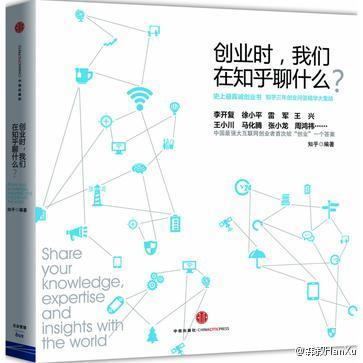
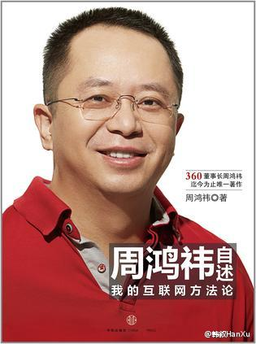

史玉柱那本书买过，内容很不错。要说系统的书，教材最适合，精品多是国外教材。还有就是国人“编著”的各类书。国内也就是一些自述性的书，还有些营养，口语化是一种趋势。@韩叙HanXu:周鸿祎和史玉柱的口述被整理一下就出书了，知乎和创业家杂志也是整理一下积累的内容也出书了。这年头出书越来越简单，只靠整理就能搞定。但上面的那几本书都缺乏深度，不系统不连贯，甚至过分口语化，重复的内容也很多。图中这几本书不建议购买和阅读。 